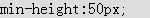
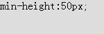
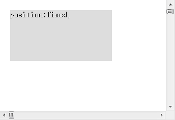
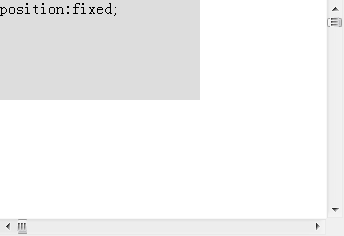

无
CSS Expression 是微软的专有技术，只有 Windows 下的 IE 浏览器支持，其他浏览器均对 expression 表达式不识别。
若在 CSS 中使用了 Expression，并仅考虑了 IE 浏览器，则可能造成其他浏览器中出现各种兼容性差异。
| IE6 IE7 IE8(Q) |
|---|
CSS Expression（CSS 表达式）也没称作 "Dynamic Properties（动态特性）" ，最初由 IE5.0 引入。它允许开发人员通过 CSS 选择器动态地为页面绑定脚本。其格式为：
selector { property: expression1 }
注1：JavaScript 表达式。
下面举一个例子，
div.title { background-color: expression(
(new Date()).getHours()%2 ? "#B8D4FF" : "#F08A00" ); }
每隔一个小时，DIV[class="title] 就会改变其背景颜色。
然而在 IE8 标准模式中，不再支持 CSS Expression。官方提供了以下几点原因：
关于 动态属性 的更多内容，请参见 MSDN：About Dynamic Properties。
关于 微软官方结束对 CSS Expression 的支持 的更多内容，请参见 MSDN：Ending Expressions。
上文提到在 IE 中使用 CSS Expression 多数情况下是为了修复或模拟某些 IE 不支持的 CSS 特性，下面就举两个例子说明：
IE6 IE7(Q) IE8(Q) 对 'min-height'、'max-height'、'min-width'、'max-width' 没有提供很好的支持，本例以 'min-height' 特性举例。
<div style="min-height:50px;
background:#ddd;">min-height:50px;</div>
这段代码在各浏览器中效果如下：
| IE6 IE7(Q) IE8(Q) | IE7(S) IE8(S) Firefox Chrome Safari Opera |
|---|---|
|  |  |
IE6 IE7(Q) IE8(Q) 此时不支持 'min-height' 特性，且 DIV 元素没有设定高度，则 'height' 特性为默认的 auto。
可以通过 CSS Expression 来弥补：
<div style="min-height:50px; background:#ddd; width:150px; _height:expression((parseInt(this.currentStyle.height) < 50) ? 50 : this.clientHeight)">min-height:50px;</div>
借助 CSS hack，仅在 IE6 以及所有 IE 的混杂模式下这个表达式会执行。
<div id="d" style="position:fixed; top:0; left:0;
background:#ddd; width:200px; height:100px;">position:fixed;</div> <div
style="width:10000px; height:10000px;"></div>
这段代码在各浏览器中效果如下：
| IE6 IE7(Q) IE8(Q) | IE7(S) IE8(S) Firefox Chrome Safari Opera |
|---|---|
|  |  |
IE6 IE7(Q) IE8(Q) 不支持 position:fixed，会将 'position' 特性的值计算为 static。无法达到固定定位的效果。
可以通过 CSS Expression 来弥补：
<div id="d" style="position:fixed; top:100px; left:100px; _position:absolute; _top:expression(offsetParent.scrollTop + 010); _left:expression(offsetParent.scrollLeft + 100); background:#ddd; width:200px; height:100px;">position:fixed;</div> <div style="width:10000px; height:10000px;"></div>
同样是借助 CSS hack，仅在 IE6 以及所有 IE 的混杂模式下这个表达式会执行。
CSS Expression 是一个已经过时的技术，微软官方日后可能不会再对其进行开发及支持。 除非为了利用 CSS hack 去弥补某些 IE 中不支持的 CSS 特性，否则应尽量避免使用 CSS Expression。
| 操作系统版本: | Windows 7 Ultimate build 7600 |
|---|---|
| 浏览器版本: |
IE6
IE7 IE8 Firefox 3.6.2 Chrome 5.0.356.2 dev Safari 4.0.5 Opera 10.51 |
| 测试页面: | expression.html |
| 本文更新时间: | 2010-07-16 |
CSS Expression hack 表达式 min-width max-width min-height max-height fixed